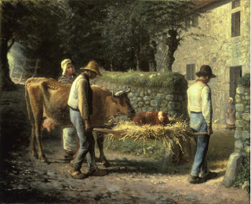

Chullin 68 - The Meat in the Field
If one slaughters a pregnant animal, the fetus is considered to have been slaughtered together with its mother, and it does not require a shechitah of its own. Of course, it has to be killed before being eaten, but that killing can be done in any possible way. In fact, if two such animals grow up and have an offspring, this offspring does not require shechitah either.
If an animal was in difficult labor and the fetus put forth its foreleg and then drew it back, the fetus can be eaten without shechitah, as above, except for the foreleg. However, if it put forth its head and then drew it back, it is considered to have been born, and it will require its own shechitah.
The foreleg that was put forth is prohibited because of the phrase "and meat in the field, terefah , you will not eat." The words "in the field" are extra, since a predator can attack anywhere, and it teaches an additional lesson: once meat has gone outside of its bounds (its mother's womb), it becomes forbidden. The Talmud started this topic because of its connection to the laws of terefah discussed earlier.
Art: Jean-Francois Millet - Peasants Bringing Home a Calf Born in the Fields